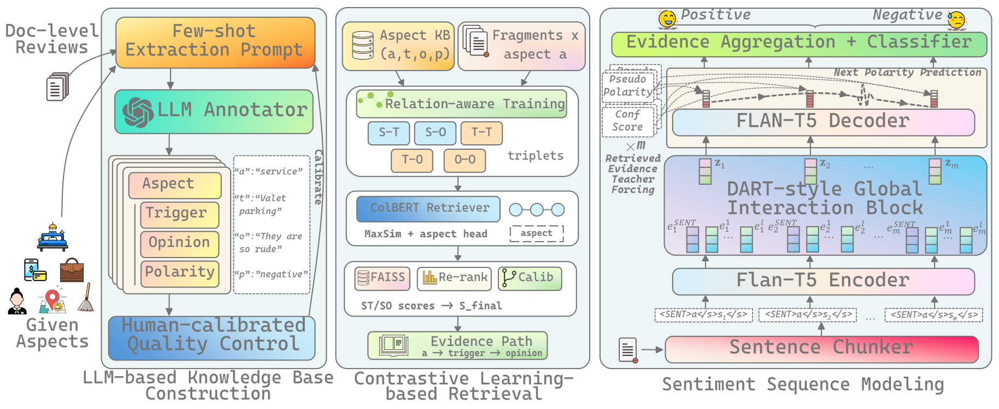
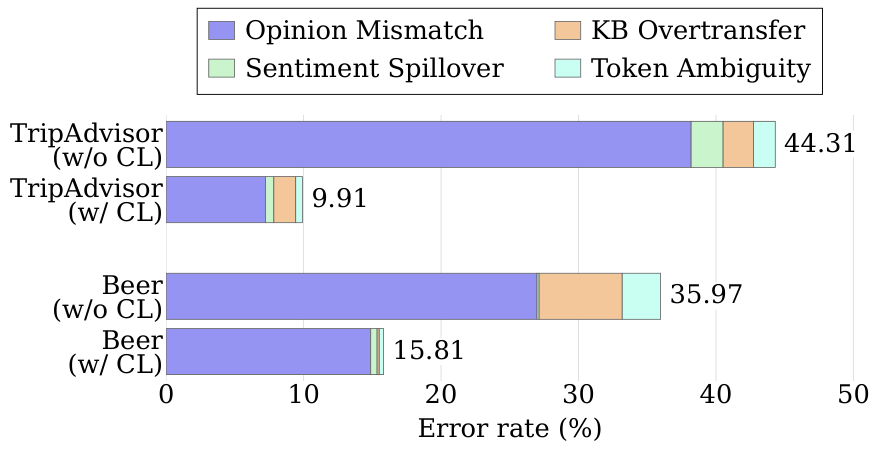
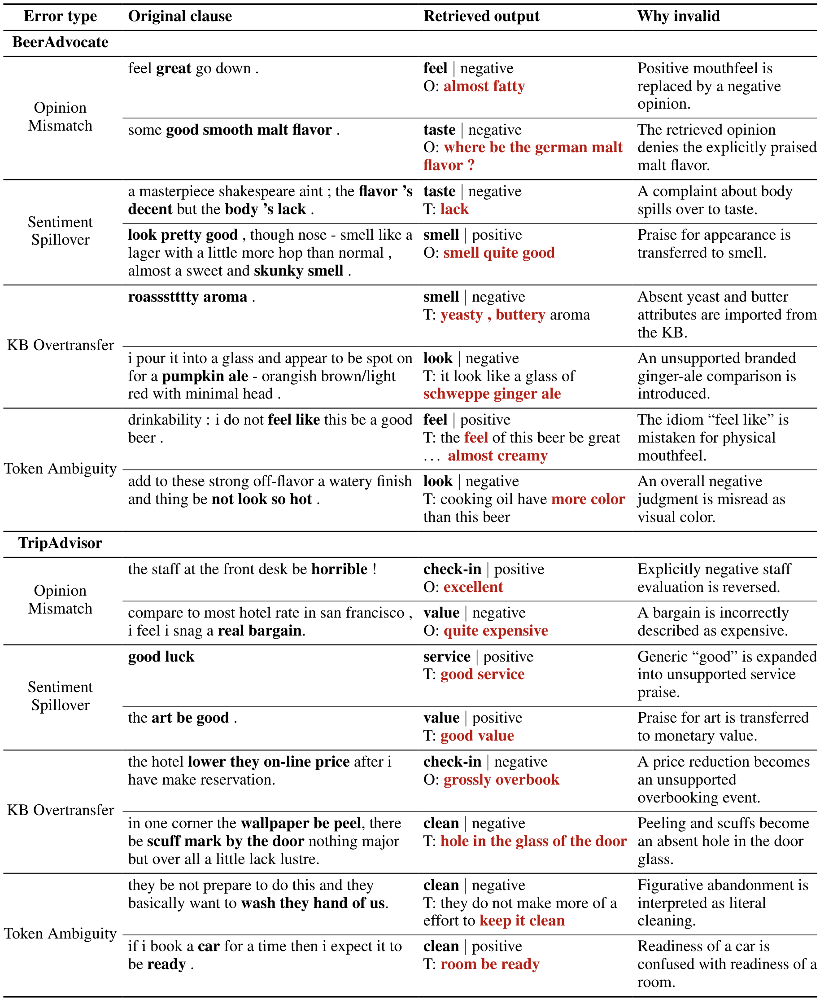
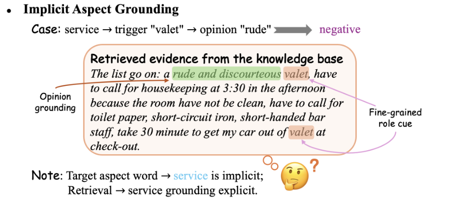
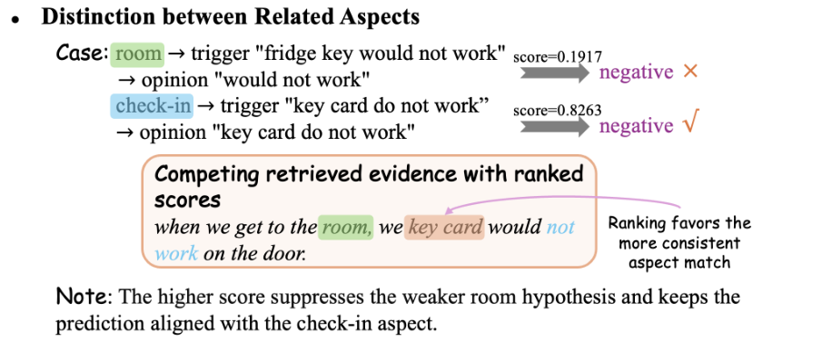
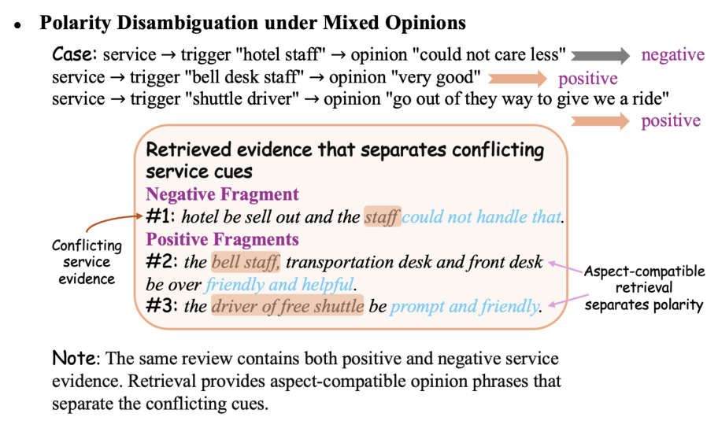
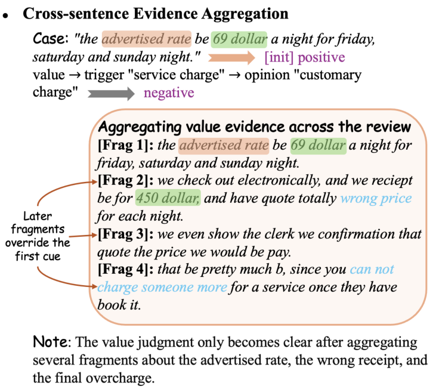
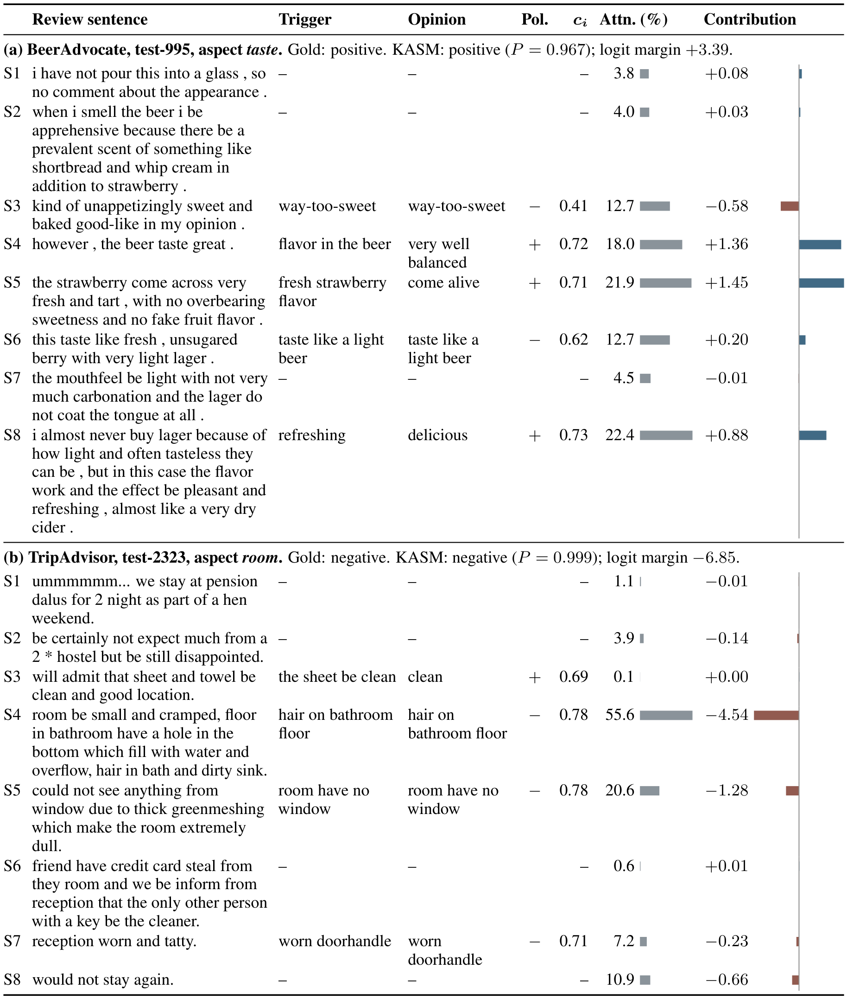
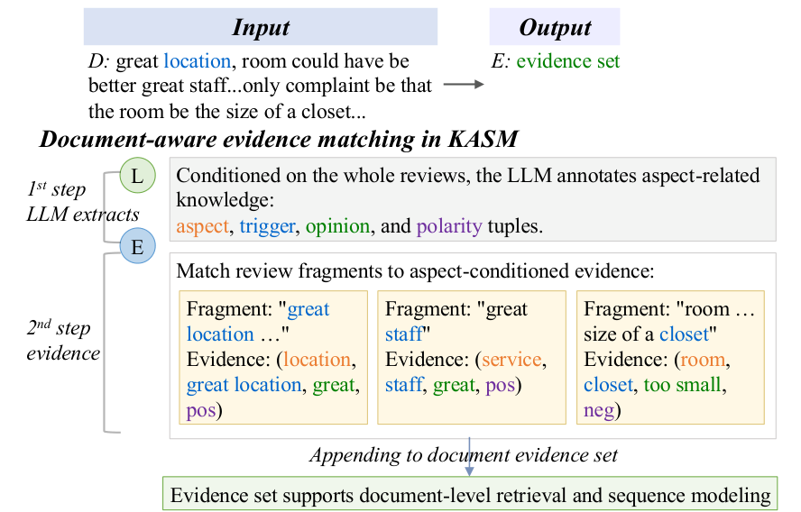

Knowledge-Augmented Sequence Modeling for Document-Level Aspect-Based Sentiment Analysis
Document-level aspect-based sentiment analysis requires predicting aspect-specific sentiment in long reviews, where evidence is often dispersed, implicit, and affected by discourse-level sentiment shifts. Existing document-level ABSA methods can model long-range interactions, but their evidence and external knowledge are usually encoded in latent representations, making predictions difficult to audit or ground to readable spans. We propose KASM, a knowledge-augmented sequence modeling framework for document-level Aspect Category Sentiment Classification. KASM constructs aspect-conditioned knowledge tuples with LLMs, grounds review fragments through relation-aware contrastive retrieval, and integrates the retrieved evidence into sequence modeling for discourse-level sentiment prediction. The framework is studied on BeerAdvocate and TripAdvisor. Its retrieved evidence paths provide readable associations between aspect cues, opinion phrases, and local polarities. The case studies illustrate implicit aspect grounding, distributed evidence, and conflicting opinions within the same review.
Long reviews often discuss multiple aspects at once. A hotel review may praise the location while criticizing the room, service, or check-in process. This makes document-level aspect-based sentiment analysis harder than sentence-level classification, because the model must identify aspect-specific evidence across a long context rather than relying on a single local opinion phrase [1], [2].
Existing approaches address this challenge from different angles. Document-level sentiment preference modeling captures global sentiment tendencies [3], diversified multiple-instance learning aggregates sentence-level evidence for multi-aspect classification [2], and recent instruction-based methods reformulate ABSA as a prompting or instruction-following task [4], [5]. KASM instead emphasizes explicit evidence grounding: the model links review fragments to aspect triggers, opinion phrases, and sentiment polarities before making the final aspect-level prediction.

Extract aspect–trigger–opinion–polarity (ATOP) tuples from training reviews. Each tuple connects an aspect to a textual trigger, opinion span(s), and local polarity. Local opinions may disagree with the overall document-level sentiment.
Train a ColBERT-style retriever with sentence–trigger, sentence–opinion, trigger–trigger, trigger–opinion, and opinion–opinion relations. Retrieve an aspect-conditioned evidence path for each sentence, together with its polarity and confidence.
Encode sentences with FLAN-T5 and DART-style global interaction. Decode a polarity sequence using confidence-guided feedback, then use the final decoder state to attend over sentence evidence for one document-level prediction per target aspect.
At both training and inference, a retrieved polarity supplies the next decoder input when confidence exceeds 0.50. Otherwise, the model feeds back its own predicted polarity. Learned sentence-position embeddings preserve document order before global interaction.
Document-level cross-entropy trains the final classifier. A confidence-weighted SmoothL1 sequence loss supervises intermediate polarity estimates at valid sentence positions with positive retrieval confidence. The sequence-loss coefficient is 1.
The final decoder state queries the contextualized sentence representations. Retrieval confidence adds a prior to attention logits with weight 1 before softmax. Unmatched sentences remain available to attention; padding is masked out.
These are distinct uses of retrieval: feedback selects a decoder input, sequence loss supplies a training target, and the confidence prior adjusts evidence weights.
Document-level aspect sentiment classification on BeerAdvocate and TripAdvisor. Long documents contain more than 512 FLAN-T5 tokens before model input truncation. Accuracy and macro-F1 are reported as percentages.
Values and significance markers below are transcribed from Tables 3–4 of the manuscript (EMNLP_KASM.pdf, October 16, 2026); they are manuscript-reported results, not a new evaluation or independent verification performed for this website.
| Category | Model | BeerAdvocate | TripAdvisor | ||||||
|---|---|---|---|---|---|---|---|---|---|
| All | >512 | All | >512 | ||||||
| Acc | F1 | Acc | F1 | Acc | F1 | Acc | F1 | ||
| Task-specific doc-level ABSA | D-MILN | 72.59 | 70.67 | 68.40 | 65.54 | 73.16 | 72.95 | 71.82 | 71.71 |
| Task-specific doc-level ABSA | AB-DMSC | 84.56 | 81.77 | 88.21 | 83.04 | 80.80 | 80.16 | 79.10 | 79.05 |
| Task-specific doc-level ABSA | DART | 88.13 | 86.19 | 91.04 | 88.41 | 86.25 | 85.65 | 84.69 | 84.56 |
| Prompt-based fine-tuning | InstructABSA | 88.29 | 86.61 | 82.08 | 76.95 | 84.43 | 83.98 | 80.18 | 80.09 |
| Prompt-based fine-tuning | THOR | 88.45 | 87.07 | 90.09 | 87.61 | 86.60 | 86.06 | 82.63 | 82.46 |
| Direct LLM prompting | GPT-5.5 zero-shot | 85.50 | 84.04 | 88.68 | 86.57 | 75.01 | 74.71 | 83.88 | 83.86 |
| Direct LLM prompting | GPT-5.5 few-shot | 85.62 | 84.19 | 90.09 | 87.73 | 71.99 | 71.72 | 80.78 | 80.78 |
| Knowledge-enhanced | Retrieval-IT | 86.84 | 85.05 | 79.25 | 71.21 | 82.84 | 82.44 | 79.91 | 79.87 |
| Knowledge-enhanced | KASM | 91.02† | 89.80† | 91.04 | 88.66 | 88.13† | 87.63† | 87.35† | 87.26† |
† reproduces the manuscript’s significance annotation: comparison with the strongest baseline in the same column, using a two-sided paired permutation test over reviews, 10,000 permutations, and Holm-adjusted p < 0.05 across eight comparisons. These tests have not been rerun for this page.
| Variant | BeerAdvocate | TripAdvisor | ||
|---|---|---|---|---|
| Acc | F1 | Acc | F1 | |
| KASM | 91.02 | 89.80 | 88.13 | 87.63 |
| w/ mean pooling | 88.49 | 86.80 | 86.78 | 86.31 |
| w/o sequence loss | 88.97 | 87.19 | 86.19 | 85.67 |
| w/o confidence prior | 87.80 | 85.85 | 87.05 | 86.69 |
| w/o pseudo guidance | 88.70 | 87.02 | 86.72 | 86.22 |
| w/o contrastive learning | 85.99 | 83.73 | 84.99 | 84.62 |
The manuscript evaluates top-1 retrieved paths on 200 sampled reviews per dataset. Figure 3 breaks down errors into opinion mismatch, sentiment spillover, KB overtransfer, and token ambiguity, comparing retrievers with and without contrastive learning.


Figure 4 illustrates four kinds of evidence grounding. Each panel below is reproduced from the latest manuscript. Click an image to inspect the original-sized version.




Download the complete Figure 4.
Table 20 traces every sentence of two correctly classified reviews: BeerAdvocate test-995 / taste and TripAdvisor test-2323 / room. It includes retrieved trigger, opinion, polarity, confidence, attention weight, and contribution.

Attention is an aggregation weight. Contribution is the additive share of the positive-minus-negative logit with contextual sentence representations held fixed; it is not a causal removal experiment. Contributions sum to the logit margin up to the classifier bias.
